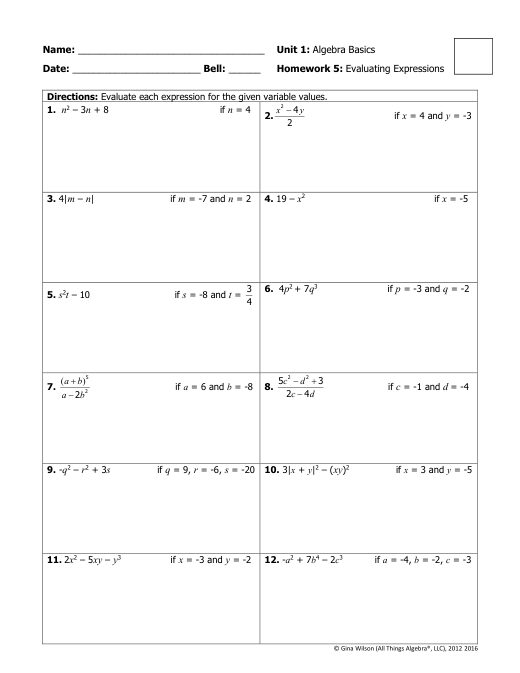
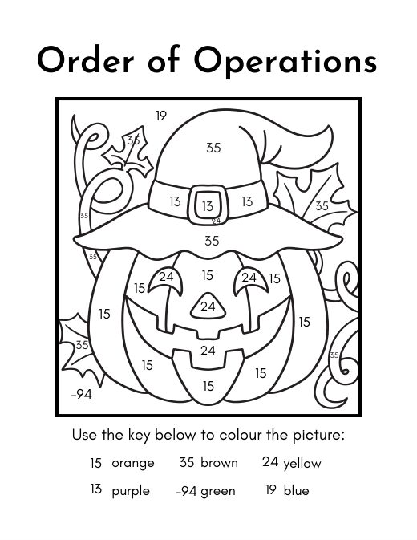
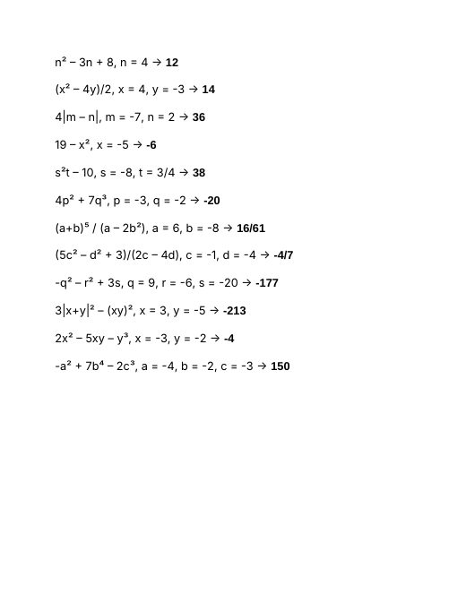
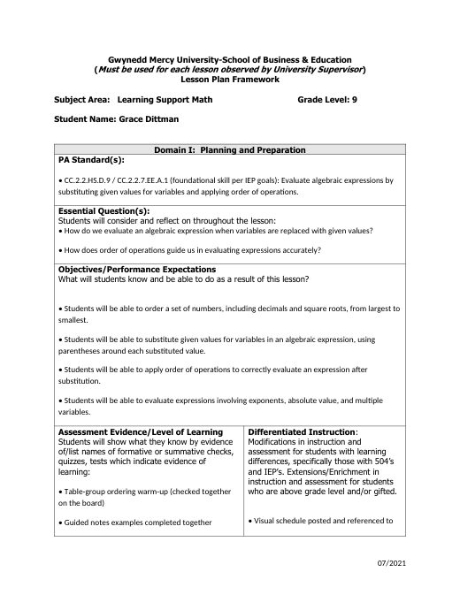
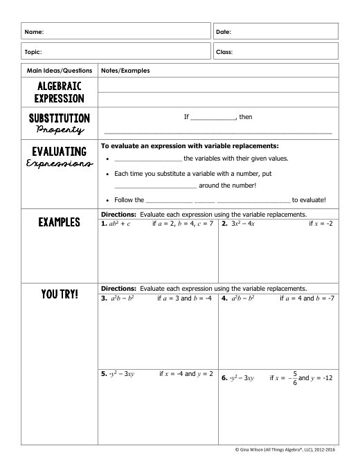
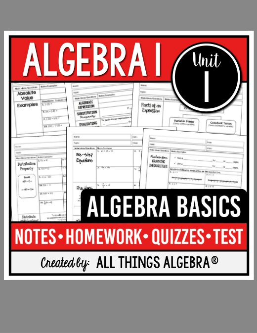
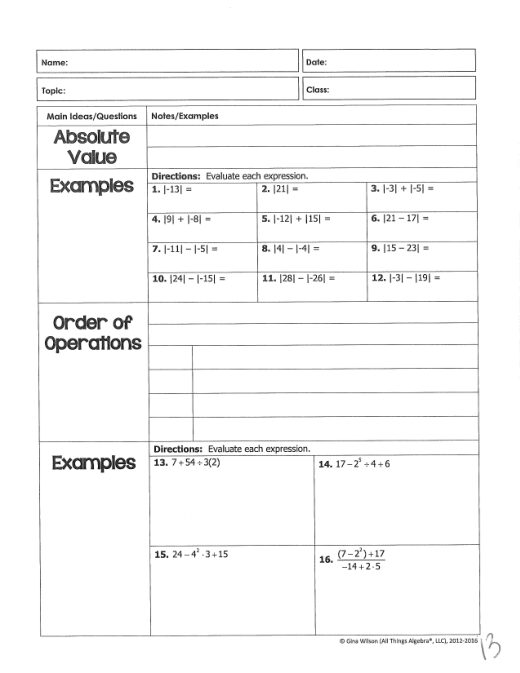

Grace Dittman
Student Teaching Portfolio
Block 2 Math
Block 3 Math
ESS
Lesson Plans
Résumé
Search
Home
›
Block 3 Math
›
Week 3
Week 3
← Week 2
Week 4 →
Activities
· 9 files
Absolute Value Maze
AbValueMaze.pdf
Absolute Value Maze (Answer Key)
AbValueMazeKEY.pdf

Evaluating Expressions Homework
evaluatingexpressionsWKsht.pdf
third-party
Practice Worksheet: Absolute Value, Order of Operations, Evaluating Expressions
MathPractice_Worksheet.docx
Order of Operations Color-by-Number
Order of Operations Color By Number Worksheet.pdf

Order of Operations Color-by-Number (Answer Key)
Order of Operations Color By Number.pdf
Order of Operations Warm-Up (Answer Key)
Order of Operations Warm-Up Key.docx
Order of Operations Warm-Up
Order of Operations Warm-Up.docx

Evaluating Expressions Answer Key
Practice Answer Key.docx
third-party
Canva Slides
· 1 file
Canva Slides B3W3
Canva Slides B3W3.docx
Lesson Plans
· 3 files
Factors, Perfect Squares & Simplifying Radicals
B3_9-14_15LessonPlan.docx
Ordering Numbers, Absolute Value & Order of Operations
B3_9-16_17LessonPlan.docx

Evaluating Expressions with Substitution
B3_9-18_9-22LessonPlans.docx
Notes
· 4 files

Evaluating Expressions Notes
EvalExNotes.pdf
third-party

Unit 1 - Algebra Basics
Unit 1 - Algebra Basics.pdf
third-party
Unit 1 Notes Key (scanned)
unit 1 KEY.pdf
cooperating teacher's

Absolute Value & Order of Operations Notes
week3notes.pdf
third-party
← Week 2
Week 4 →